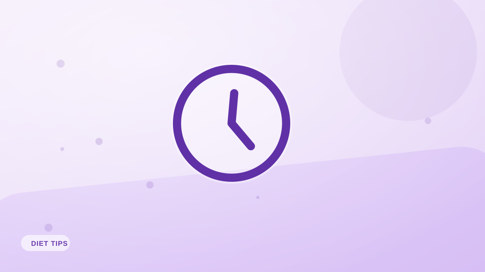

¿Importa el horario de las comidas para perder peso?
>¿Cenar tarde engorda? ¿Hace falta desayunar? Esto es lo que dice la evidencia sobre horarios y frecuencia de comidas, y lo que de verdad importa.

Los consejos sobre horarios están por todas partes y a menudo se contradicen. No comas tarde. Haz seis comidas pequeñas. Nunca te saltes el desayuno. Es tentador pensar que el reloj guarda el secreto de la pérdida de peso. Casi nunca es así, aunque hay algunos matices genuinamente útiles.
Las calorías totales siguen mandando
La verdad de fondo: tu peso lo determinan las calorías totales a lo largo del tiempo, no la hora del reloj. Una caloría comida a las nueve de la noche no engorda más por naturaleza que una comida a mediodía. Si el total diario encaja en tu déficit, el horario es secundario.
El mito de comer tarde
Comer tarde no almacena más grasa por arte de magia. Lo que sí es cierto es que comer de noche suele ser comida extra y no planificada —picoteo automático encima de las comidas del día— y eso suma calorías. Lo que importa son esas calorías de más, no el reloj.
¿Hace falta desayunar?
No necesariamente. El desayuno ayuda a quien se queda con mucha hambre o come de más después si no lo toma. Pero si por la mañana no tienes hambre y comes bien el resto del día, saltártelo está perfectamente bien. Aquí gana la preferencia personal.
Dónde sí ayuda el horario
- Control del apetito: espaciar las comidas para no llegar con un hambre extrema reduce los excesos.
- Entrenamiento: algo de proteína y carbohidratos alrededor del ejercicio puede favorecer el rendimiento.
- Sueño y digestión: a algunas personas, una cena muy copiosa justo antes de dormir les altera el descanso.
La conclusión
Come con un horario que controle tu hambre y encaje en tu vida: ese es el beneficio real de la planificación horaria. Más allá de eso, céntrate en las calorías totales y la proteína, registradas de forma sencilla con Fotocal.
Ideas clave
- Las calorías diarias totales importan mucho más que el horario.
- Comer tarde no engorda por el reloj; engordan las calorías de más.
- El desayuno es opcional: guíate por el hambre y la preferencia.
- Organiza las comidas para controlar el apetito y apoyar el entrenamiento.